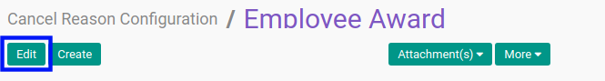
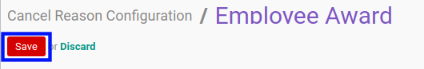

Memodifikasi Cancel Reason Configuration
A. INPUT
(Tidak ada instruksi khusus)
B. LANGKAH KERJA
- Buka menu Setting -> Cancel Reason -> Cancel Reason Configuration. Abaikan jika sudah berada pada menu yang dimaksud.
- Buka data Cancel Reason Configuration yang akan dimodifikasi. Abaikan jika data sudah dibuka.
- Klik tombol Edit pada bagian atas-kiri form.

- Beralih ke tab Reasons.
- Tambah/Hapus Cancel Reason. Ulangi langkah ini sampai Cancel Reason sesuai dengan keinginan.
- Beralih ke tab Notes.
- Isi dan sesuaikan Notes jika dibutuhkan. Tidak wajib diisi.
- Klik tombol Save pada bagian atas-kiri form.

C. OUTPUT
- Data Cancel Reason Configuration akan berubah sesuai dengan perubahan yang dilakukan.